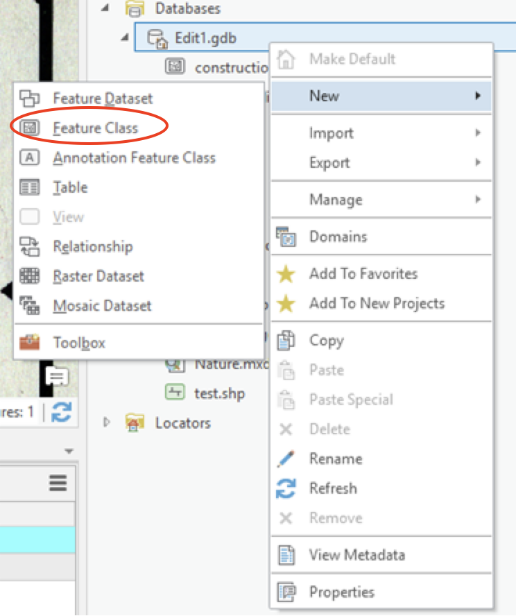
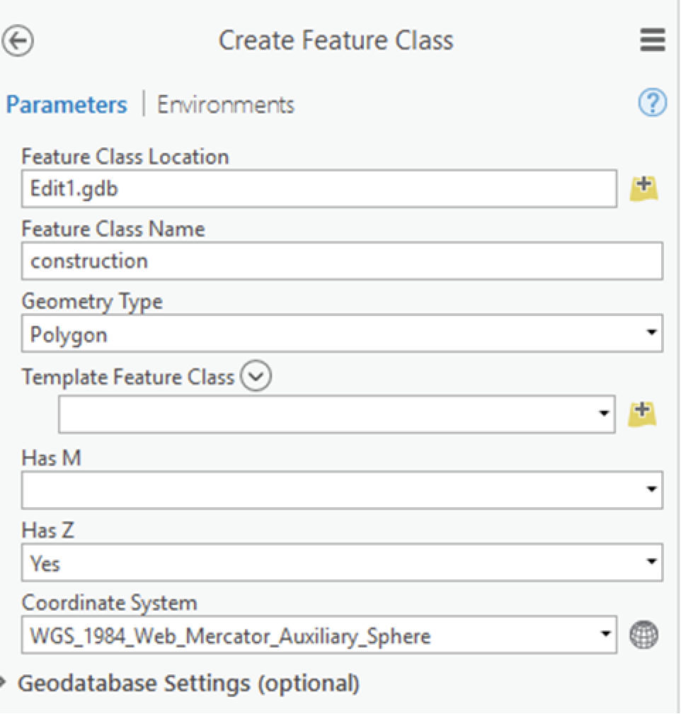
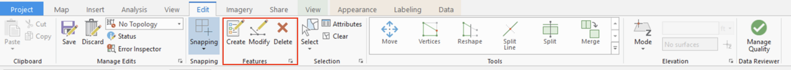
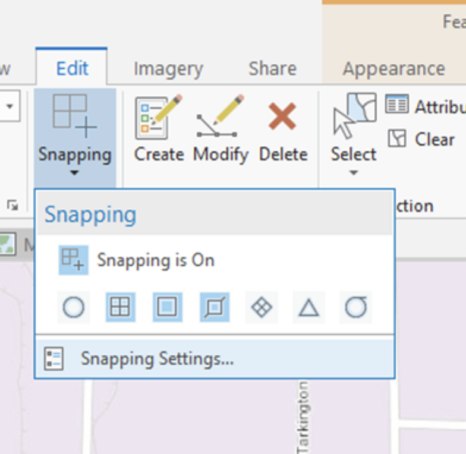
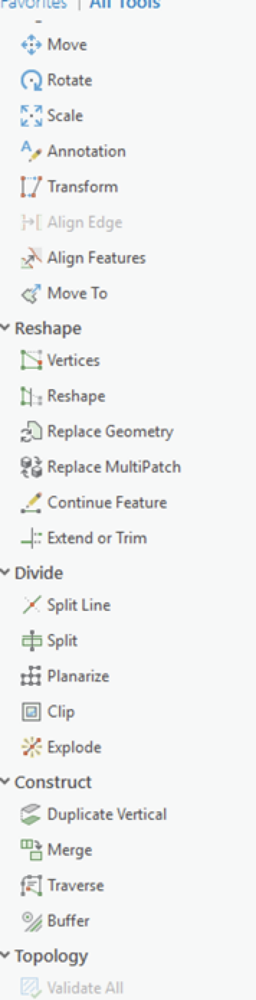
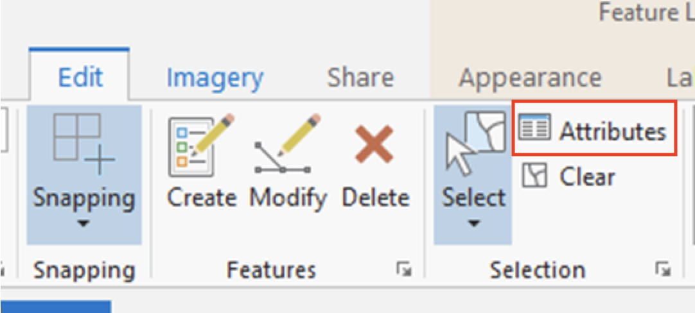
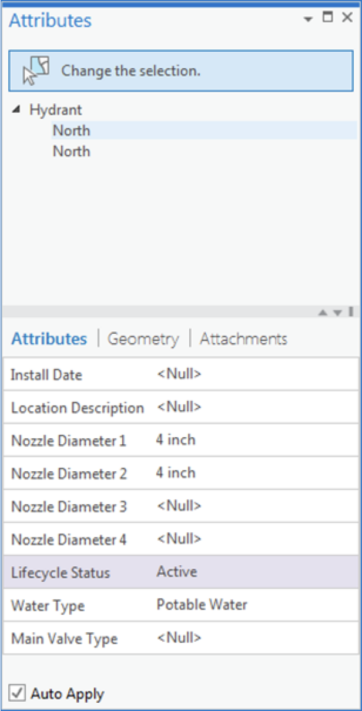

In this tutorial, digitizing means the process of converting features on a paper/scanned map, aerial photos, or raster images into digital vector features.
Purpose: Through digitizing process, users can convert unique features from maps, aerials and other raster layers to GIS vector data.
Input data: to digitize, you need a reference map which includes the spatial features you are interested to digitize. If your reference map is only available in hardcopy format, you will need to scan the map, and georeference it before digitizing.
Spatial reference: the reference map should come with a coordinate system (projection). Ideally, this coordinate system is the same as your new feature class.
Scale: Your reference map should have a map scale that is appropriate for digitizing the features.
Resolution: for digital raster images, the resolution must be good enough to determine the shape of the features you plan to digitize.
All the geospatial features need a place to be saved. So we start the digitizing process by creating a new vector file, a new feature class within a geodatabase, or a new shapefile.
If you want to add new features to an existing feature class, you can simply open the feature class and skip this step.
To create a new feature class in ArcGIS Pro: Open the Catalog Pane, right-click on a Geodatabase, click on New -> feature class...
Create a feature class from the Catalog Pane
In the Geoprocessing tool, enter the name for the new feature class, and then select the Geometry Type to be created. You can also select the coordinate system for your new feature class.
Name your feature class
Before creating any new features, you should choose a scale at which you will digitize features. This scale should clearly represent the features you want to trace. Try to remain at the same scale as you digitize.
Data editing scenarios:
Digitize new features
Modify existing features
Delete features
ArcGIS allows you to edit data using edit tools
Edit tools
Features are created in ArcGIS Pro using templates.
Feature template defines the default template type for your feature class.
Every editable feature layer has a feature template, created automatically when the layer is added to the map.
You can edit the existing template, or create new feature template.
Generally, the template name corresponds to the layer name or a unique symbol value on which the features are created, but you can change it.
You can use snapping tools to avoid editing errors.
Snapping is the process of moving a feature to coincide with another point’s or feature’s coordinates when your pointer is within a specified distance (tolerance distance).
Snapping tools
In case you need to modify any geometry you have digitized, ArcGIS Pro provides a whole list of tools allow you to reshape, move, or split the geometry of your features.
Geometry editing
After you have creed geometry for a feature, you can add the attributes for it. You can add attributes in the attribute table or Attributes pane. Add new fields if you need more columns in the attribute table.
Feature attribute toolsFeature attribute table
 Estimated time to complete: 40-50 minutes
Estimated time to complete: 40-50 minutes{kind=link}
{kind=link}
{kind=link}
{kind=link}
{kind=link}
{kind=link}
{kind=link}
{kind=link}
{kind=link}